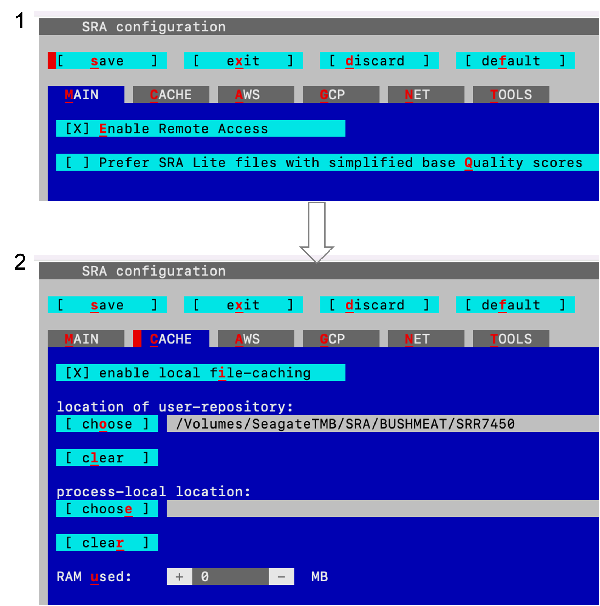

2 Installing SRA Toolkit
- Navigate to where you want to install the tools, preferably the home directory.
- For more information click here.
Demo on MAC OS
curl -LO https://ftp-trace.ncbi.nlm.nih.gov/sra/sdk/3.0.0/sratoolkit.3.0.0-mac64.tar.gz
tar -xf sratoolkit.3.0.0-mac64.tar.gz
export PATH=$HOME/sratoolkit.3.0.0-mac64/bin/:$PATH2.2 Confirm sra toolkit configuration
- The
vdb-config -icommand below will display a blue colored dialog. - Use tab or click
cto navigate to cache tab. - Review the configuration then save
sand exitx.

A screenshot of the SRA configuration.
For more information click here.